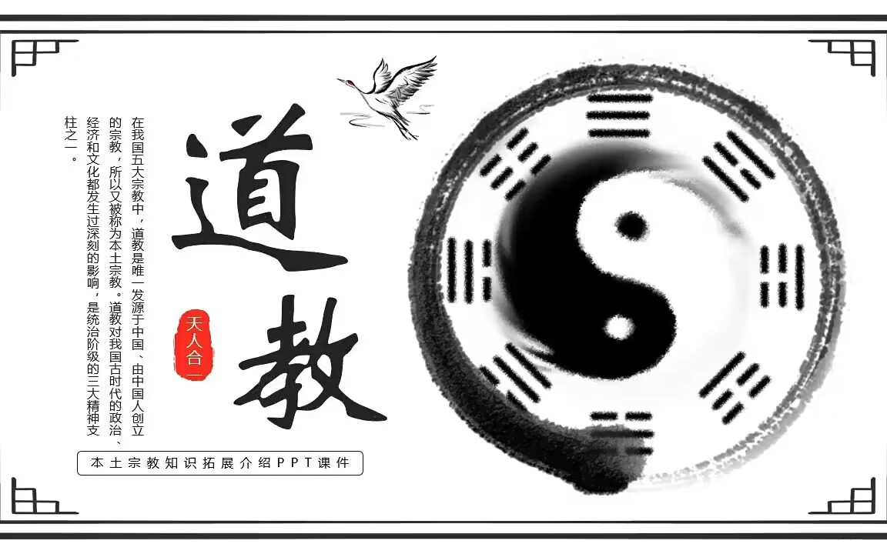
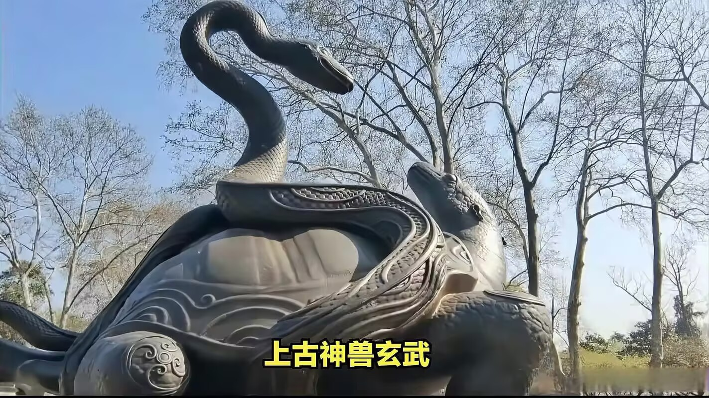
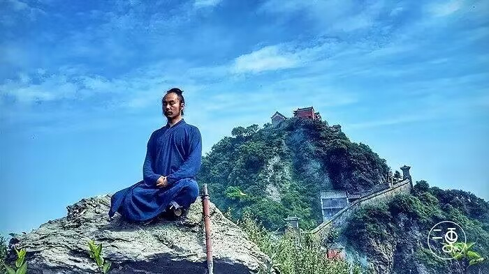
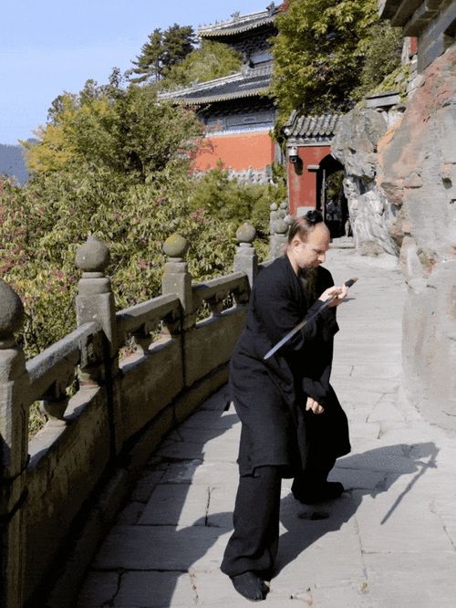
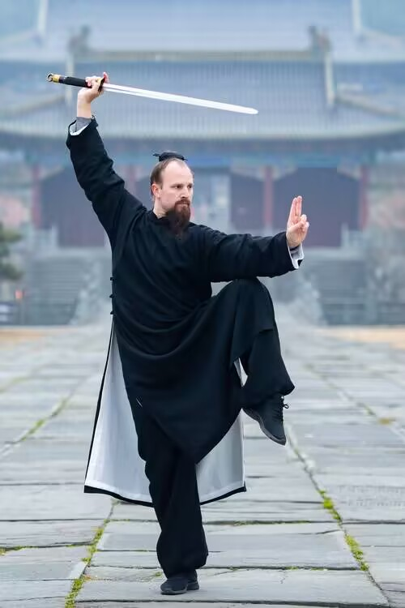
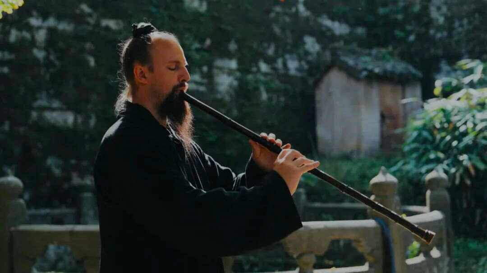

|  | 武当道教——玄武 武当道教是中国道教的一个重要流派，它的教理、教义与中国道教的教理、教义同出一辙。武当道教是“以武当山为本山，以信仰真武——玄武，重视内丹修炼，擅长雷法及符箓禳，强调忠孝伦理、三教融合为主要特征的”一种道教派别。 武当道教，指以湖北武当山为传播中心的道教。武当山以敬奉“真武大帝”而得名，是真武大帝修炼得道之地。 真武，即元武，“元”通“玄”，故又名玄武。宋真宗赵恒因避所尊圣祖赵玄朗名讳，改玄武为真武，尊为“佑圣帝君”，沿袭至今。据《真武本传神咒妙经》记，玄武是太上老君八十二化身，于远古黄帝时，降为净乐国太子，后经其师紫元君超度，到武当山修炼42年，功成道满，升天成神，被玉皇大帝封为“玄天上帝”等，镇守北方，因此，武当山被道教尊为玄天真武上帝的修炼圣地。 武当山的道教文化不仅体现在宗教信仰上，还包括道教的教义与实践。道教强调“道法自然”，崇尚自然的和谐与平衡，倡导修身养性、无为而治的哲学理念。 武当山的道教徒在这里修行，追求身体和精神的双重升华。道教的修炼方法，如气功、太极拳等，也在武当山得到传承和发扬，吸引了大量的道教爱好者前来学习和体验。 |
|---|---|
|  | |
|  | |
|  | 热爱武当道教的外国友人——杰克 据统计，目前全球有150多个国家和地区的上亿人在练习太极拳，80多个国家和地区建立了太极拳组织，武当武术协会已在全球范围内相继建立了34家海外分会，每年有约3万名外国人不远万里来到武当山习武。武当山上的外国人越来越多。 据十堰当地媒体报道，这十余年来，武当山已有2万多名道教“洋弟子”，另有38个海外武术分会。仅2008年以来，到武当山求道学武的外国人就有8000多人。山下的玉虚宫、遇真宫，每天都有外国人刻苦习武。 也有海外的“道友”正在将“道缘”带向五洲四海，杰克两位回到美国的“师兄”，在各自的家乡开了武馆，将在武当山的修行成果传授给更多人。 |